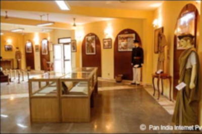
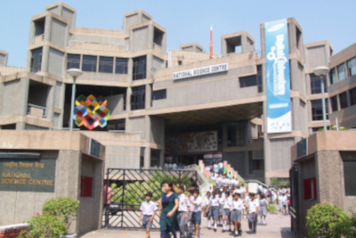
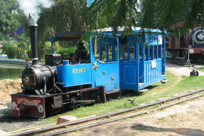
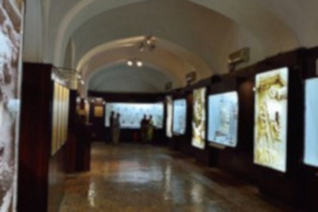
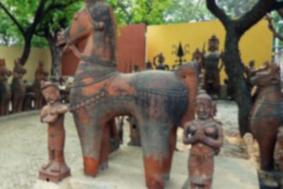
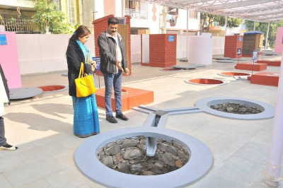

Museums
11. National Police Museum

This museum takes us into the world of thrill and sensation as museum contains several thought provoking items all related to police, Crime & Criminals, from the ancient to the modern times. Exhibited items are acquired from different states and central police organizations both of Indian and Foreign Origin. Photography is allowed with permission. Museum has no admission fees.
Closed: Saturday & Sunday
Timing: 10.00am to 5.00pm
Location: Block No.-4, CGO complex,Lodi Road, New Delhi
12.National Science Center

Constructed in 8 floors, this museum houses working science exhibition as well as exhibits on the history of architecture. It has various sections for all age groups such as Heritage & Dinosaur gallery, Human Biology gallery, Fun Science Library etc. There are also a number of hands-on displays explaining the laws of physics. The Cyberlkool of this museum is the first fun-packed multimedia centre in the country. At least a whole day is required to go through this children's paradise.
Closed: Holi & Diwali only
Timing: 10:00 am to 5.00 pm
Location: Bhairon Marg, near Pragati Maidan Gate No. 1, New Delhi.
13. National Rail Museum

This unique museum has a fascinating and exotic collection of over 100 real size exhibits of Indian Railways. Static and working models, signaling equipments, antique furnitures, historical photographs and related literature etc. are displayed in the museum. The line-up of old coaches includes the handsome Prince of Wales Saloon, built in 1875. Not to be outdone is the Maharaja of Mysore's Saloon built in 1899 with its brocade covered chairs and an elegant rosewood bed; one can peer in through the windows for a good look. National Rail Museum
Closed: Monday
Timing: 9:30 am to 5:30 pm
Location: Chanakyapuri, New Delhi
14. Red Fort Archaeological Museum

Located inside the Mumtaz Mahal of the historic Red Fort in Delhi, The Red Fort Archaeological Museum is mainly dedicated to Bahadur Shah Zafar, India's last Mughal King. It showcases various impressive objects dating back from the Mughal period. It contains artifacts, calligraphy, paintings, textiles, costumes and other such objects that date to the Mughal era.
Closed: Public Holidays
Timing: 09:00 AM - 05:00 PM Daily
Location: Red Fort, Old Delhi
15. National Handicrafts and Handlooms Museum

The National Handicrafts and Handlooms Museum well known as the National Crafts Museum in Delhi is one of the largest crafts museums in India. It functions under the Ministry of Textiles, Government of India.The Crafts Museum complex is an attractive retreat located in the middle of the chaos of Delhi. It comprises of mud huts with thatched roofs, painted walls and courtyards, craftsmen at work, etc. These are some of the aspects that add to the rural appearance of the place
Closed: Monday and Public Holidays
Timing: 09:30 AM - 05:00 PM (July to September) & 09:30 AM - 06:00 PM (October to June)
Location: Bhairon Road, Pragati Maidan, New Delhi - 110001
16. Shankar's International Dolls Museum
Accommodating in the building of the Children's Book Trust in Delhi, Shankar's International Dolls Museum was set up by the famous political cartoonist, K. Shankar Pillai (1902 - 1989). It has one of the largest and impressive collections of costume dolls that grab attention of people of all groups. The museum is worth visiting for children and all those who want to recall their childhood fantasy life. It has over 6,500 dolls from almost eighty-five countries of the globe, which aid in giving the museum an international personality.
Closed: Monday and Public Holidays
Timing: 10:00 AM - 05:30 PM
Location: Nehru House, 4, Bahadur shah Zafar Marg, New Delhi
17. Sulabh International Museum of Toilets

The Museum has a rare collection of facts, pictures and objects detailing the historic evolution of toilets from 2500 BC to date. It provides a chronological account of developments relating to technology, toilet related social customs, toilet etiquettes, prevailing sanitary conditions and legislative efforts of different times. It has an extensive display of privies, chamber pots, toilet furniture, bidets and water closets in use from 1145 AD to the modern times.
Closed: Public Holidays
Timing: 10:30 AM - 5:00 PM
Location: Palam Dabri Marg, New Delhi 110045